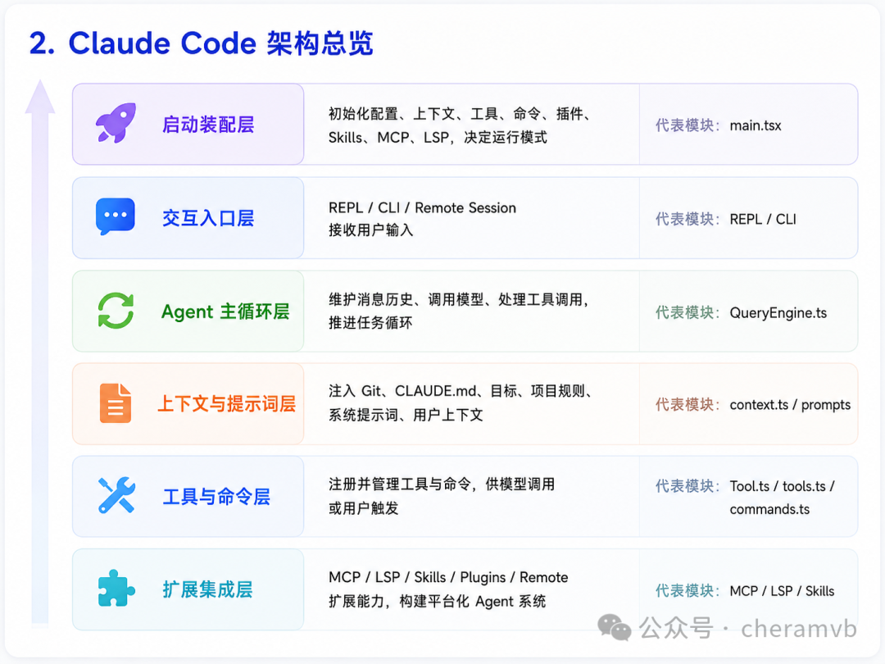
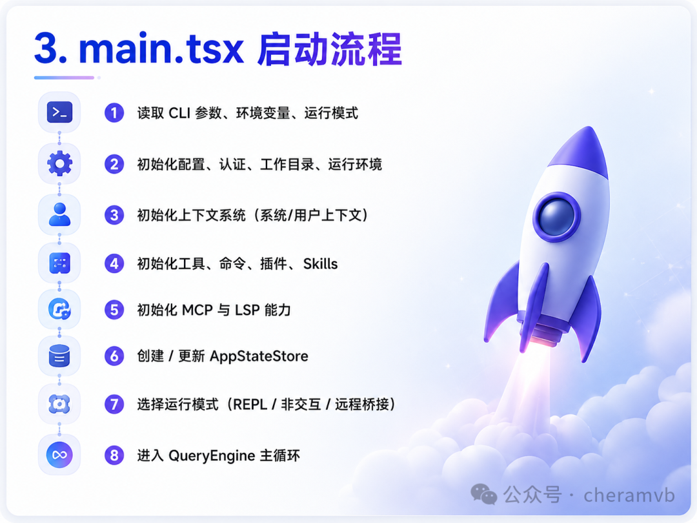
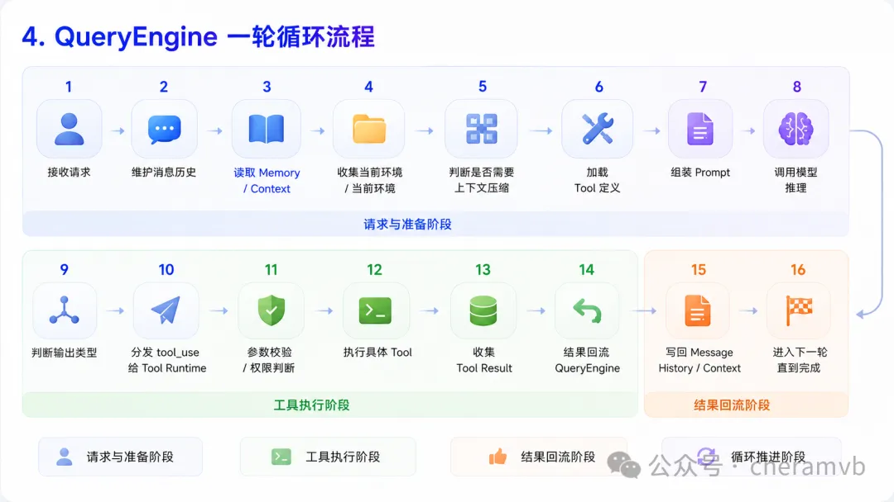
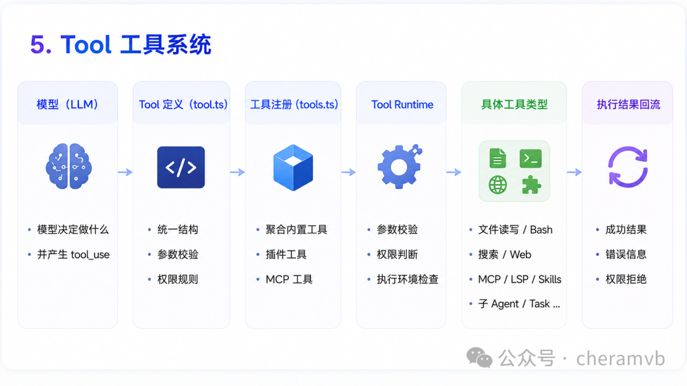

参考链接： https://www.xuanyuancode.com/learn-claude-code
友情提效 ： GPT - 5.5
author ： cheramvb
1. 对Claude Code的理解
Claude Code 的 Agent Loop 可以概括为：
main.tsx 启动 Claude Code↓完成运行时装配包括配置读取、环境初始化、Context 准备、Tool / Command / Skills 注册、MCP / LSP / 权限策略初始化↓CLI / REPL / Remote Session 接收用户输入↓QueryEngine 接收请求并整理消息历史↓QueryEngine 组织 Prompt / Context / Message / Tool 定义↓调用模型进行推理↓模型产生普通回答或 tool_use 工具调用请求↓如果产生 tool_use，QueryEngine 将其分发给 Tool Runtime↓Tool Runtime 完成参数校验、权限判断和工具执行↓工具执行结果回流 QueryEngine↓QueryEngine 将工具结果加入消息历史和上下文↓进入下一轮模型推理↓循环执行，直到任务完成并输出最终结果
其中，main.tsx 是启动入口，为了快速启动：采用“轻量装配 + 按需加载”的方式，
详解看3. main.tsx 启动分析
不是全量加载所有内容而是先完成运行时注册、能力发现、元数据装配再在 QueryEngine 任务循环中按需调用、按需展开、按需执行
真正驱动任务执行的是 QueryEngine。 详解看4. QueryEngine 循环对话
这个体现了多 Agent 架构思想。复杂任务可以通过 Task/Agent 机制拆成多个子任务，由子 Agent 分别完成检索、分析、方案设计、文件修改等局部工作，再把结果汇总回主 Agent。这样主 Agent 负责整体规划和协调，子 Agent 负责局部执行，既能降低上下文压力，也能提升复杂任务处理效率。
2. Claude Code 源码架构总览。
2.1 架构主干

可以抽象成下面这条主链路：
main.tsx↓启动装配层：初始化运行环境、加载配置、注册工具/命令/Skills、准备上下文、启动服务↓用户交互层：REPL / CLI / Remote Session↓QueryEngine 主循环↓Prompt / Context / Message 管理↓Tool 抽象层↓文件 / Bash / 搜索 / Web / MCP / LSP / Agent / Skills 等工具↓执行结果回流 QueryEngine
如果按职责分层，可以分成六层：
| 层级 | 代表模块 | 核心职责 |
|---|---|---|
| 启动装配层 | main.tsx | 初始化配置、上下文、工具、命令、插件、Skills、MCP、LSP，决定进入 REPL、非交互还是远程模式 |
| 交互入口层 | REPL / CLI / Remote | 接收用户输入、命令输入、远程会话输入 |
| Agent 主循环层 | QueryEngine.ts | 维护消息历史，调用模型，处理工具调用，推进任务循环 |
| 上下文与提示词层 | context.ts / prompts | 注入 Git、CLAUDE.md、日期、项目规则、系统提示词、用户上下文 |
| 工具与命令层 | Tool.ts / tools.ts / commands.ts | 把外部能力注册成模型可调用工具或用户可触发命令 |
| 扩展集成层 | MCP / LSP / Skills / Plugins / Remote | 让 Claude Code 从内置工具扩展为平台化 Agent 系统 |
3. main.tsx

3.1 main.tsx 的定位
在很多 CLI 项目中，入口文件只负责解析参数，然后调用某个业务函数。但 Claude Code 的 main.tsx 更像一个 composition root，也就是系统装配根。
它要在进入主循环前准备好：
系统上下文和用户上下文。
工具列表。
Slash Commands 命令列表。
MCP 服务和资源。
LSP Server Manager。
插件系统。
Skills 系统。
REPL 或非交互执行模式。
远程会话或桥接能力。
AppStateStore 状态管理。
也就是说，main.tsx 负责把 Claude Code 从“一堆模块”装配成“一个可运行的 Agent 系统”。
3.2 启动阶段的典型流程
程序启动↓读取 CLI 参数、环境变量、运行模式↓初始化配置、认证、工作目录、运行环境↓初始化上下文系统：getSystemContext / getUserContext↓初始化工具系统：getTools / getAllBaseTools↓初始化命令系统：getCommands / filterCommandsForRemoteMode↓初始化 LSP Server Manager↓初始化内置插件 initBuiltinPlugins↓初始化内置 Skills initBundledSkills↓初始化 MCP 相关能力↓创建或更新 AppStateStore↓根据模式选择：REPL / 非交互 / 远程桥接↓进入 QueryEngine 主循环
3.3 main.tsx 为什么对 Agent 架构很关键
如果面试官问：“为什么你要看启动入口？入口不就是启动程序吗？”
可以这样回答：
在 Agent 系统里，启动入口决定了模型能看到什么、能调用什么、受哪些权限约束、有哪些上下文、能否接入外部工具。Claude Code 的 main.tsx 不是简单启动 UI，而是在进入主循环前完成工具、命令、上下文、插件、Skills、MCP、LSP、远程会话等能力的统一装配。这个设计说明它不是单一聊天程序，而是一个可扩展 Agent Runtime。
4. QueryEngine

4.1 QueryEngine 的定位
QueryEngine 是Claude Code实现Agent Loop的关键。
它不是只负责调用一次模型，而是负责管理完整的任务推进过程：
维护消息历史。
组装系统提示词和上下文。
处理上下文压缩。
调用模型并接收流式输出。
识别模型是否要调用工具。
执行工具并收集结果。
处理权限拒绝、错误、中断和恢复。
将工具结果重新写回消息历史。
继续下一轮模型调用。
判断任务是否完成。
4.2 QueryEngine 的运行时流程
QueryEngine 一轮 Agent Loop 的调用顺序来理解。
用户输入 / 交互层请求↓1. QueryEngine 接收请求↓2. 读取并维护 Message History- 用户输入- 历史 assistant 回复- 历史 tool_use- 历史 tool_result↓3. 读取 Memory / 持久规则- CLAUDE.md- 用户偏好- 项目规则- 历史摘要↓4. 收集 Context / 当前环境- 当前工作目录- Git 状态- 项目结构- 当前任务状态- 已有工具执行结果↓5. 判断是否需要上下文压缩- token 是否接近上限- 历史消息是否需要摘要化- 保留关键任务状态↓6. 加载可用 Tool 定义- 工具名称- 工具描述- 参数 schema- 权限规则- 可用范围↓7. 组装 Prompt- System Prompt- 主 Agent 行为规则- Context- Memory- Message History- Tool Definitions- 用户当前请求↓8. 调用模型进行推理- 接收流式输出- 解析普通文本- 识别 tool_use↓9. 判断模型输出类型├─ 普通回答│ ↓│ 写入消息历史│ ↓│ 判断任务是否完成│└─ tool_use↓10. QueryEngine 分发 tool_use 给 Tool Runtime↓11. Tool Runtime 执行前处理- 参数校验- 权限判断- 危险操作确认- 执行环境检查↓12. 执行具体 Tool- 文件读写- Bash- 搜索- Web- MCP- LSP- Skills- 子 Agent / Task↓13. 收集 Tool Result- 成功结果- 错误信息- 权限拒绝- 中断状态↓14. 工具结果回流 QueryEngine↓15. QueryEngine 写回 Message History / Context↓16. 进入下一轮模型调用↓循环执行，直到任务完成
更适合面试中说的版本：
QueryEngine 的调用顺序大致是：先接收用户输入并整理消息历史，然后读取 Memory 和项目 Context；接着判断是否需要上下文压缩，再加载当前可用 Tool 定义；之后把 System Prompt、用户请求、上下文、历史消息和工具定义组装成模型输入。模型推理后，如果只是普通回答，就写回消息历史并判断任务是否结束；如果产生
tool_use，QueryEngine 就把它交给 Tool Runtime，完成参数校验、权限判断和工具执行。工具结果再回流到 QueryEngine，被写入消息历史和上下文，继续下一轮推理，直到任务完成。
4.3 为什么 QueryEngine 是 Claude Code 的核心
如果没有 QueryEngine，Claude Code 可能只是：
用户输入 → 调模型 → 模型输出但有了 QueryEngine，它变成了：
用户目标 → 多轮推理 → 多工具调用 → 结果回流 → 持续修正 → 最终完成任务4.4 面试回答模板
我理解 QueryEngine 是 Claude Code 的主 Agent Loop。：QueryEngine 管的不只是模型调用，而是整个任务循环。
它不是简单地把用户问题转发给模型，而是负责维护消息历史，并把用户需求、系统上下文、项目规则、工具定义等内容组装成模型输入；模型推理后如果产生
tool_use，QueryEngine 就会将其分发到工具执行链，完成权限校验、参数校验、工具执行和结果回写；随后再把工具结果加入上下文，推动下一轮模型推理，直到任务完成。
5. Tool 工具系统

Claude Code 的 Tool 系统可以重点从两个文件切入：tools.ts 和 tool.ts
这两个文件的关系可以概括为：
tool.ts↓定义 Tool 的统一接口和执行规范tools.ts↓收集、过滤、注册当前可用的 Tool 集合QueryEngine↓把 Tool 定义提供给模型，并在 tool_use 出现后调度执行
面试里可以这样说：
我理解
tool.ts解决的是“工具如何被抽象”的问题，它定义工具的统一结构、参数校验、权限要求和执行入口；tools.ts解决的是“当前有哪些工具可用”的问题，它会聚合内置工具、插件工具、MCP 工具等能力，形成工具注册表。这样模型不需要关心工具背后的实现差异，只需要按照统一的 tool schema 产生tool_use，再由 QueryEngine 和 Tool Runtime 完成真实执
Tool 的核心思想
Tool 系统的核心思想是：
把模型不能直接完成的工程动作，封装成结构化、可校验、可权限控制、可回写上下文的工具。
模型本身不能真正读取文件、修改代码、运行测试、搜索仓库、访问 MCP、调用 LSP。它只能“决定要做什么”。真正执行动作的是 Tool。
所以 Claude Code 的执行力来自：
模型选择工具+Tool Runtime 执行工具+工具结果回流模型
Tool 和 Slash Command 的区别
这一点面试很容易被问到。
| 对比项 | Tool | Slash Command |
|---|---|---|
| 调用者 | 模型调用 | 用户显式调用 |
| 入口形式 | tool_use | /xxx 命令 |
| 主要作用 | 让模型执行动作 | 让用户控制系统行为 |
| 示例 | 读文件、跑 Bash、改代码、查 MCP | /clear、/model、/config、/init 等 |
| 本质 | Agent 的动作接口 | CLI/REPL 的控制接口 |
可以这样总结：
Tool 是给模型用的执行面，Slash Command 是给用户用的控制面。两者都能触发能力，但职责不同。
6. BashTool 为什么关键
虽然你原 MD 没单独列 Bash，但你上传的文件里有专门一篇讲 Bash，因此这里必须补充。
6.1 BashTool 的核心价值
BashTool 让 Claude Code 从“代码建议工具”变成“工程执行工具”。
没有 Bash，它主要只能：
看文件。
改文件。
解释代码。
给出建议。
有了 Bash，它可以：
运行测试。
执行构建。
安装依赖。
查看 Git 状态。
搜索文件。
检查运行结果。
复现错误。
验证修复是否成功。
所以 BashTool 的意义不是“能执行命令”，而是让 Agent 具备闭环能力：
修改代码 → 运行测试 → 观察失败 → 再修改 → 再验证BashTool 不是简单的 child_process.exec 包装，它需要处理：
命令是否安全。
命令是否会修改文件。
命令是否长时间运行。
命令输出是否过长。
命令是否需要用户确认。
命令是否与任务系统绑定。
命令失败如何反馈给模型。
命令执行结果如何进入上下文压缩管线。
7. Prompt 整体上是 Harness 思想
我理解 Claude Code 的 Prompt 设计体现的是一种 Harness 结构。它不是单一的一段提示词，而是由多层提示词共同组成一个“约束模型运行的外壳”，再由主 Agent 提示词统一调度这些规则、上下文和工具能力。
它的 Prompt 可以分成两大类：
Prompt├─ System Prompt│ ├─ 基础身份与行为规则│ ├─ Agent 工作方式约束│ ├─ 工具调用规则│ ├─ 安全与权限规则│ ├─ 代码修改规范│ ├─ 输出格式要求│ └─ 主 Agent 调度提示词│└─ User Prompt├─ 用户当前输入├─ 用户明确目标├─ 用户补充约束└─ 会话历史中的用户意图
其中 System Prompt 是底层约束，决定模型“能做什么、不能做什么、应该怎么做”；User Prompt 是当前任务目标，告诉模型“这次要完成什么”。在它们之上，主 Agent 提示词会把项目上下文、工具定义、Skills、CLAUDE.md、Git 状态、历史消息等内容组织起来，让模型在一个受控环境中推理和行动。
8. Context 和上下文压缩
1. Context 的主要内容
Claude Code 的 context 主要是为了让模型在执行任务前先“了解项目现场”。
主要包括：
系统上下文：
当前工作目录项目路径Git 状态当前分支文件修改情况运行环境当前日期可用工具权限模式
用户 / 项目上下文：
用户当前任务历史对话CLAUDE.mdmemory files项目规则代码规范常用命令用户偏好
工具上下文：
有哪些工具每个工具能做什么工具参数是什么什么时候该用哪个工具哪些工具不该滥用
一句话：
Context 不是把所有代码都塞给模型，而是把“当前项目状态 + 用户目标 + 项目规则 + 工具说明”组装给模型。
2. 为什么要上下文压缩
因为 Claude Code 是多轮 Agent，会不断产生：
用户消息模型回复工具调用文件读取结果搜索结果命令行输出报错日志代码修改记录
这些内容会越来越长，最终超过模型上下文窗口。
所以需要压缩，目的不是单纯省 token，而是：
减少无用长输出保留关键任务状态保留用户目标保留已读文件和已修改文件保留错误信息保留下一步计划让 Agent 能继续执行
一句话：
上下文压缩是为了防止长任务中断，同时让模型在压缩后还能接着干活。
3. 上下文压缩顺序
整体顺序可以记成：
原始历史消息↓工具结果预算裁剪 Tool Result Budget↓snip 局部裁剪↓microcompact 微压缩↓context collapse 上下文折叠↓autocompact 自动摘要压缩↓发送给模型↓如果仍然超限↓reactive compact 兜底压缩
每一步作用：
Tool Result Budget：先裁剪 Bash、Read、Grep 等工具产生的大段输出。snip：剪掉局部无用内容，比如重复日志、过长输出。microcompact：把工具调用结果压缩成简短结论，但保留工具调用链。context collapse：折叠旧上下文，尽量保留结构化信息。autocompact：当上下文接近上限时，把旧历史总结成摘要。reactive compact：如果发送模型时还是超限，就触发兜底压缩。
最简面试版：
Claude Code 的 context 主要包括系统环境、Git 状态、CLAUDE.md、memory、用户任务、历史消息和工具说明。因为 Agent 会不断读文件、跑命令、调用工具，历史会快速膨胀，所以需要上下文压缩。压缩顺序大致是：先裁剪工具结果，再做局部 snip，然后 microcompact 压缩工具调用结果，再 context collapse 折叠上下文，如果还接近上限就 autocompact 自动摘要，最后如果请求仍然超限，就 reactive compact 兜底压缩。
9. Skills 系统
1. Skill 结构
Skill 通常是一个 SKILL.md 文件，分两部分：
YAML frontmatter + Markdown 正文YAML 负责索引：
namedescriptionallowedTools
告诉系统：这个 Skill 是什么、什么时候可能用、允许用哪些工具。
正文负责执行：
适用场景执行步骤注意事项示例
告诉模型：真正使用这个 Skill 时该怎么做。
2. Skill 加载流程
启动↓扫描 Skills 目录↓读取 SKILL.md↓解析 YAML 元数据↓注册为可用 Skill↓模型根据任务判断是否需要↓需要时再加载完整正文
核心点：
Claude Code 不会一开始加载所有 Skill 正文，只先缓存 name、description、allowedTools 等元数据；等任务相关时，再按需展开完整 Skill 内容。
面试一句话：
Skills 系统本质是“轻量索引 + 按需展开”。启动时只读取 SKILL.md 的 YAML 元数据注册技能，不把全部正文塞进上下文；模型发现任务需要某个 Skill 后，再加载正文中的执行步骤和注意事项。
10.Memory
Claude codeMemory机制
1. 会话记忆当前消息历史，包括用户输入、模型回复、tool_use、tool_result、错误信息和权限拒绝结果。主要存储在当前会话的 Message History 中，用来保证对话连续性。2. 任务工作记忆当前任务的临时状态，包括 Todo、执行计划、已读文件、搜索结果、工具结果、子 Agent 返回。主要存在运行时状态、工具结果和当前上下文中，用来支撑复杂任务持续推进。3. 项目记忆项目级长期规则，主要来自 CLAUDE.md、项目说明、代码规范、目录约定、构建/测试命令。通常存储在项目文件或项目配置中，用来让 Agent 理解当前仓库的工程规则。4. 用户/全局记忆跨会话偏好和配置，包括语言偏好、输出风格、用户设置、常用技术栈、全局规则。通常存储在用户级配置或全局记忆中，用来实现跨会话的个性化。5. 压缩摘要记忆长会话压缩后的关键摘要，包括任务目标、重要约束、已完成内容、未完成事项和下一步计划。通常由 /compact 或自动压缩生成，用来在上下文有限的情况下继续推进任务。
对这样理解更贴近 ToC 网页 Agent 的实际实现。可以总结成下面这版：
1. 当前任务上下文直接放在大模型上下文里。因为现在大模型上下文窗口已经很长，当前一次任务里的用户输入、最近对话、工具结果、约束条件等，可以优先通过 Prompt 上下文承载。作用：支撑当前任务推理，不一定马上持久化。2. 短期任务记忆存 Redis / 内存数据库。包括当前任务状态、Todo、当前步骤、临时工具结果、生成进度、任务锁、子任务状态等。作用：保证当前任务可继续、可暂停、可恢复，适合短生命周期状态。3. 历史对话展示存关系型数据库。包括会话列表、会话标题、消息记录、摘要、创建时间、更新时间、用户可见的历史内容。作用：用于前端展示“历史记录”“最近对话”，方便用户回看。4. 用户画像 / 用户记忆存关系型数据库。包括语言偏好、回答风格、常用场景、职业方向、长期目标、技术栈、个性化规则等。作用：实现跨会话个性化。
再补一句 RAG 的定位：
RAG 不主要负责存当前任务状态，而是负责存需要语义检索的内容：- 用户上传资料- 知识库文档- 历史任务摘要- 长对话压缩摘要- 可复用 SOP / 模板 / 经验- 用户画像中的长文本总结
一句话总结：
当前任务主要靠大模型上下文承载；短期状态放 Redis；历史对话和用户画像放数据库；RAG 只存需要后续语义召回的知识、摘要和经验，而不是所有聊天内容都向量化。
11. Slash Commands 命令系统
Slash Commands 是用户显式控制 Claude Code 的入口。
它和 Tool 不同：
Tool 是模型调用。
Slash Command 是用户调用。
例如用户输入 /clear、/init、/help、/model、/config，系统不需要模型判断，直接进入对应命令逻辑。
Slash Command 让用户能够直接控制系统，而不必每次都绕模型。
Tool 是 Agent 的动作接口，Slash Command 是用户的控制接口。Claude Code 同时保留这两套机制，是因为有些事情应该由模型自主调用，比如读文件、跑测试；有些事情应该由用户显式控制，比如清空会话、切换模式、查看配置。这种区分可以避免系统行为过于黑盒。
12. MCP
如果 Claude Code 内置工具解决的是“我自己会什么”，那么 MCP 解决的是“我还能接入谁”。
MCP 让 Claude Code 可以接入外部工具、外部资源和外部服务，例如：
数据库工具。
内部文档系统。
代码仓库服务。
工单系统。
搜索服务。
企业内部工具平台。
13. 多 Agent 与子任务机制
为什么需要多 Agent
单 Agent 长时间处理复杂任务会遇到几个问题：
上下文越来越乱。
子任务之间互相干扰。
搜索、分析、修改、验证混在一起。
某个方向跑偏会污染主对话。
任务并行度低。
因此 Claude Code 引入了子 Agent / Task 机制。
多 Agent 运行流程
主 Agent 判断任务复杂↓调用 AgentTool / TaskCreateTool↓创建子 Agent 或子任务↓子 Agent 获得独立上下文和目标↓子 Agent 执行搜索 / 分析 / 验证 / Skill 流程↓子 Agent 输出结果摘要↓主 Agent 汇总结果↓继续主任务决策
子 Agent 的价值
隔离上下文，避免污染主线程。
适合并行探索不同方向。
适合执行复杂 Skill。
适合长任务拆解。
主 Agent 只接收结果摘要，降低上下文压力。
面试表达
多 Agent 机制解决的是复杂任务的上下文隔离和任务拆解问题。Claude Code 不是永远让一个主对话承担全部任务，而是可以通过 AgentTool、Task 工具或 Skill fork，把复杂流程交给子 Agent 执行，最后主 Agent 汇总结果。这种设计很适合企业 Agent 中的并行检索、代码审查、线上排障和多模块改造。
15. 权限与安全机制
权限机制用于约束 Agent 的工具调用边界，通过权限审批、工具白名单、高危命令拦截等方式，避免模型在自动执行过程中误删文件、运行危险命令、修改关键配置或访问敏感资源，从而降低不可逆操作带来的风险，保证 Agent 执行过程可控、可追溯。